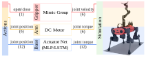
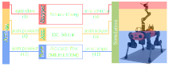

执行器#
一个可移动的系统包括执行关节，也称为自由度（DOF）。在实际系统中，传动通常通过主动部件，如电动或液压马达，或通过被动部件，如弹簧来实现。这些部件可能会引入某些非线性特征，包括延迟或最大可产生的速度或扭矩。
在模拟中，关节可以是位置、速度或扭矩控制的。对于位置和速度控制，物理引擎在内部实现了一个弹簧阻尼（PD）控制器，用于计算作用在执行关节上的扭矩。在扭矩控制中，命令直接设置为关节作用力。虽然这模拟了关节机构的理想行为，但并不真正模拟驱动在物理世界中的工作方式。因此，我们提供了一种机制来注入外部模型，以计算关节命令，以代表物理机器人的行为。
执行器模型#
我们命名了两种不同类型的执行器模型：
隐式：对应于理想的模拟机制（由物理引擎提供）。
显式：对应于外部驱动模型（由用户实现）。
显式执行器模型包括两个步骤：1）计算跟踪输入命令的期望关节扭矩，2）根据电机能力对期望扭矩进行裁剪。裁剪后的扭矩是设置到模拟中的期望作用力。
作为理想显式执行器模型的一个示例，我们提供了 omni.isaac.lab.actuators.IdealPDActuator 类，它实现了一个带前馈作用的PD控制器，并根据配置的最大作用力进行简单裁剪：
其中，\(k_p\) 和 \(k_d\) 是关节刚度和阻尼增益，\(q\) 和 \(\dot{q}\) 是当前关节位置和速度，\(q_{des}\)、\(\dot{q}_{des}\) 和 \(τ_{ff}\) 是期望的关节位置、速度和扭矩命令。参数 \(\gamma\) 和 \(τ_{motor, max}\) 是变速箱比和电机的最大作用力。
执行器组#
执行器模型本身是计算单元，它们的输入是期望的关节命令，输出是应用到模拟器中的关节命令。它们不包含任何关于它们本身所作用的关节的知识。这些由 omni.isaac.lab.assets.Articulation 类处理，它包装了物理引擎的关节类。
执行器被视为在关节机构上使用相同执行器模型的多个执行关节的集合。例如，ANYmal-C四足机器人使用串联弹性执行器 ANYdrive 3.0 来作用于其所有关节。这种分组配置了这些关节的执行器模型，将输入命令转换为关节级别的命令，并返回设置到模拟器中的关节动作。具有不同执行器模型的手臂，如直流电机，将需要配置一个不同的执行器组。
下图显示了一个腿式移动操作器的执行器组：
 {kind=link}
{kind=link}
参见
我们为各种显式执行器模型提供了实现。这些详细信息在 omni.isaac.lab.actuators 子包中。